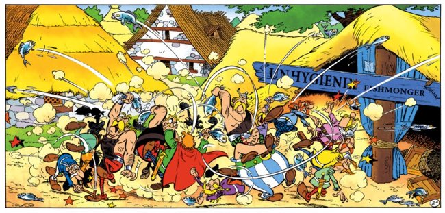

August 30, 2020
The problem with C

In the early 70s, C was created at Bell Labs as a byproduct of the development of UNIX. It quickly became one of the most popular programming languages. But it was not expressive enough for Bjarne Stroustrup. And so, in 1983, as a byproduct of his Ph.D. thesis, he extended C.
C with classes was born.
At the time, Bjarne Stroustrup understood that a programming language has many components, not only the language, its compiler, but also a linker and libraries. Offering a familiar tool also makes adoption easier. In this historical context, it makes sense that C++ would be based on C.
Fast-forward 40 years later.
Both C and C++ are widely used in the industry. But go 5 minutes on the Internet and C developers will tell you that C++ is the most horrific man-made creation, while many C++ developers wait for the day when C finally burns in the hot flames of hell.
So what happened?
On the surface, C and C++ cater to the same use cases: high performance, deterministic, native but portable code for the widest range of hardware and applications.
But C is proudly a low-level language. A nicer assembly.
From day one, C++ had magic. Dark witchcraft: destructors. Suddenly the compiler was doing things on its own.
It also had type inference very early on, but the developers of the mid-80s were not quite ready for that and Bjarne Stroustrup
was pressured into removing auto, until it was added back to C++11.
From then, C++ got more and more tools to build abstractions.
I don’t think it would be fair to say that C++ is a low-level or high-level language. It’s both, by design.
But building high-level abstractions while not sacrificing performance is hard.
C++ then needed tools to achieve that: constexpr, move semantics, templates, and an ever-growing standard library.
Fundamentally I think C trusts developers while C++ trusts compilers. This is a massive difference that sharing the same native types or syntax for while loop cannot hide.
C++ developers blame C for all their lost limbs, while C developers probably think C++ is batshit crazy. I imagine that is a fair perspective if you look at C++ through a C lense. C++ is pretty wild as a superset of C. A seasoned C person looking at C++ expecting familiarity in C++ will not find it. C++ is not C. This is enough to feed flamewars for generations.
But as much as I dislike C, I don’t have any legitimacy to make fun of it. See, I have some experience with C++ but I wrote very little C. It was probably bad C. A language is also its good practices, patterns, idioms, and these take years to learn. If you try to write C code like it’s C++ or C++ like it is C, you will have a bad time. Knowing C doesn’t teach you C++. Knowing C++ does not teach you C.
So can we all stop saying C/C++, regret the unfortunate naming, and sing kumbaya in harmony? Not so fast.
See, despite being philosophically different from C, C++ is still somewhat a superset of C. That is to say, you can include a C header in a C++ translation unit and that should compile. And this is where it gets messy.
C++ is not an extension of C. It is designed as a separate standard, by a different committee, different people. Logically, people who like C++'s philosophy will get involved in the C++ community and the C++ standardization process while other people might try to get involved with C. Committees, whether its C’s or C++'s, only manifest intent and direction through their respective end-product: the standards; standards which are the fruits of numerous voting.
At the same time, it is difficult for a compiler to know that it is dealing with a C header or a C++ header.
extern "C" is not used consistently and only affects mangling, but neither grammar nor semantics.
And headers only exists in the eyes of the preprocessor, for a C++ compiler, everything is a C++ translation unit, and therefore C++.
And yet, people include C headers in C++ and expect it to “just work” ™️.
Which it mostly does.
We can wonder then,
How C++ maintains C compatibility while being developed by different people in different places?
Badly, I’m afraid.
A coworker recently reminded me of Conway’s law:
Any organization that designs a system (defined broadly) will produce a design whose structure is a copy of the organization’s communication structure
By that logic, it would stand to reason that if the two committees don’t interoperate, neither would the languages they produce.
C++ maintains a list of incompatibilities with C and its stadard library. This list does not seem to reflect the many features that were added to C11 and C18 but are not valid C++ constructs. Wikipedia draws a clearer picture.
Listing incompatibilities isn’t sufficient to get a measure of incompatibilities between both languages.
Functions that exist in the C++ standard library but whose primary declaration is expected to come from C are difficult to make constexpr, and more difficult still to make noexcept.
C compatibility translates to performance costs and C functions are optimization barriers.
Many C constructs are valid C++ but should never pass a code review (NULL, longjmp, malloc, create/destroy functions, VLA, free, C casts), etc.
These might not be bad C idioms, but they are bad C++. C++ has a stronger type system, and unfortunately using C idioms punch a giant hole in that type system, and so C compatibility has a cost in terms of safety.
Don’t get me wrong, C++ still care about C compatibility. Somewhat. And interestingly C cares about C++. Somewhat. Truth be told, C might care about C++ more than C++ cares about C. So each committee cares somewhat about what the other does. We care reluctantly.
See, C++ is aware of the many foundational libraries written in C, not only the libc but also zip, png, curl, openssl (!), and countless others, which are used in many, many C++ projects.
We can’t break that.
But recently, especially over the past decade, C++ has become much bigger than C. C++ has more users - and a much more active community: There Are No C Conferences. Maybe that’s why the C++ committee is now over 10 times the size of the C committee.
C++ then is a force to be reckoned with and the C committee has to consider not breaking C++. To the point that if a standard would track another, these days, C++ leads and C follow.
C++ is now on a steady three years cycle come rain or shine, or deadly pandemics. Meanwhile, C has a major release every decade or so. This makes sense. As a lower-level language, C doesn’t need to evolve as fast.
The C landscape is also rather different from the C++ landscape. C caters to more platforms and a lot more compilers. Everybody and their dog is writing C compilers because the language has a surface area small enough to make that possible, whereas the C++ committee will only really consider 4 implementations, all of which are represented at every meeting. As a result, many features in C are implementation-defined or optionally supported so that the variety of compilers that exist can claim conformance without doing much work, which I’m told pleases regulatory bodies.
C++ these days is more interested in portability than implementation freedom. Yet another difference of philosophy.
So, your proposal breaks C compatibility
Parts of my P2178 paper theoretically affects C compatibility. In such cases, none of the options seems satisfactory.
You could be told that you have to first get your feature into C. Which means more meetings. Meetings you might not be able to attend because C has strict attendance rules - Excluding individuals not willing to put down thousands of dollars to become ISO members. This is because the C committee is forced to adhere strictly to ISO rules.
It might also take a decade if the standard just shipped. And most importantly, it might go nowhere if the C committee doesn’t understand or doesn’t care about the particular problem you are trying to solve. And they probably don’t have the bandwidth to deal with it. And you may not have the bandwidth to deal with C. After all, you joined C++ to improve C++. In fact, if the room invites you to “talk to the C committee”, it is likely your proposal is dead, even in the unlikely event that no one in the room was against it.
Another likely scenario is that the C committee accepts a version of a proposal that is slightly different from what exists in C++.
true? Let’s make that a macro. char16_t ? Let’s make that a typedef. char32_t? Not necessarily UTF-32. static_assert ? _Static_assert.
The list goes on. Should we blame C? Probably not. Their committee does what they think is best for their language. The opposite is true too. In C++20 designated initializers were inspired by C’s but are slightly different because they would otherwise not fit with the C++ initialization rules.
I am part of the problem. C has VLAs. I would vote against a proposal to adopt that in standard C++, too many security issues. A proposal to add _Generic to C++ would be over-my-dead-body. I am not sure if _Generic attempts to palliate to the lack of template or the lack of overloads, but C++ has both these features - from my point of view _Generic doesn’t fit into the big picture of what I imagine C++ to be.
Both committees seem also inconsistent in how much they care about the other language. Sometimes we go to great lenghts (std::complex), sometimes we don’t care at all (static array parameters).
There is no way around this. Don’t forget that each committee is a bunch of people voting at different times in different rooms and trying to control the outcome would defeat the purpose of having a room. Putting people in the same room is not realistic either. ISO might object and the participation inbalance would put C people at an enormous disadvantage.
C compatibility doesn’t matter, kinda
If you are a C developer, I imagine you see C as a neat programming language. But for the rest of us, C is something else.
C is the universal, cross-language glue that ties it all together.
For C++ users, C is exactly its API. And with that in mind, the value of C is in its simplicity. Remember that the subset of C that C++ cares about is the subset that appears in interfaces, in header files. We care about declarations. Not definitions. C++ wants to call functions in C libraries (or Python, Fortran, Rust, D, Java, etc, in all cases C can be used at the interface boundary).
In that light, C is an interface definition language. The more bells and whistles are added to C, the harder it gets to define interfaces. And the less likely it is that these interfaces will remain stable over time.
So does it matter that <threads.h> is missing in C++?
Probably not, because that’s unlikely to appear in public interfaces.
Everybody talks C these days
In the days of yore, C compatibility was a big selling point for C++. Nowadays however, everyone and their goldfish understand C. Rust can call C functions. Python. Java. Everything! Even freaking Javascript can call C functions in WebAssemby.
But in these languages the interface is explicit. The language offers tools to expose specific C declarations. Sure, it is more cumbersome. But it makes the interface very very clear. And bounded. In rust, for example, calling a C function doesn’t force Rust to sacrifice some of its design to accommodate a C subset. No, C is contained.
mod confinment {
use std::os::raw::{c_char};
extern "C" {
pub fn puts(txt: *const c_char);
}
}
pub fn main() {
unsafe {
confinment::puts(
std::ffi::CString::new("Hello, world!").expect("failed!").as_ptr()
);
}
}
This code will works util the C ABI changes. And the Rust/C boundary is self-documenting and clearly visible.
And so C++ may be the language that pays its C compatibility the most.
And worse, open any C header, you will soon find a bunch of #ifdef __cplusplus.
That’s right, C++ compatibility often requires C developers a lot of work.
Compatibility was a mirage all this time. I am remembered of this tweet:
Pet peeve: code chock full of #ifdefs is _not_ "portable code". It is, at best, code that's been ported a lot. There's a big difference.
— Fabian Giesen (@rygorous) February 3, 2020
Where do we go from there?
I think both committees are trying to talk more. There is even a planned joined meeting next year in Portland (although plans might change. Pandemic. Portland…). Communication is good.
But cats and dogs can only do so much communication. The design pillars of either language might not be reconciliable. I will burn on the stake for suggesting a template. But not before complaining loudly about C having no module nor namespace system and WHAT THE HELL IS THAT MACRO.
Maybe it’s okay to restrict (!) the subset of C that C++ accepts to C99?
Maybe both languages need to find a common subset (not this one) and evolve independently?
Maybe extern C needs to affect parsing. If C++ had epochs, C could be an epoch.
Maybe we need to embrace C as a subset of C++, but the only way to do that is to dissolve WG14 into WG21.
It is possible that the status quo doesn’t change. C++ might never free itself from its origins (core dumped), while C is condemned to never breath lest they sink the ungodly pile of features that dared take on its name.
Share on